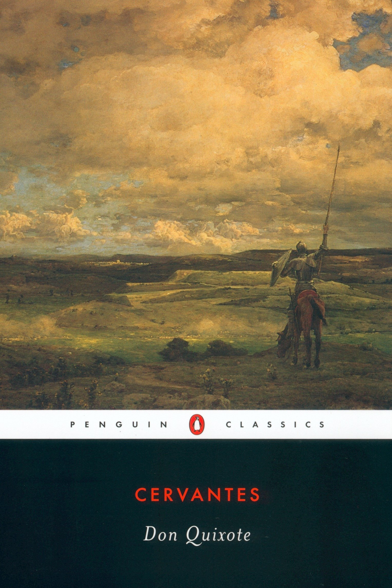

კონ კიხოტი
ინფორმაცია წიგნზე
ავტორი: მიგელ დე სერვანტესი
ჟანრი: სარიტა, ფილოსოფიური
გამოშვების თარიღი: 1605 წელი
აღწერა:
დონ კიხოტი იმდენად აღფრთოვანებულია რაინდული რომანების კითხვით, რომ თავადაც გადაწყვეტს, რაინდ-შემცდარი გახდეს. მისი ერთგული მეპატრონის, სანჩო პანსას კომპანიაში, მისი ექსპლოიტეტები ყველანაირი მშვენიერი გზით ყვავის. მიუხედავად იმისა, რომ კიხოტის ფანტაზია ხშირად ატყუებს მას - ის იხრება ქარის წისქვილებთან და მათ გიგანტებად წარმოიდგენს - სანჩო იძენს ეშმაკობას და გარკვეულ გონიერებას. საღი შეშლილი და ბრძენი სულელი, ისინი ერთად ტრიალებენ სამყაროში და ერთად ატარებენ მკითხველთა წარმოსახვას თითქმის ოთხასი წლის განმავლობაში.
თავისი ექსპერიმენტული ფორმითა და ლიტერატურული თამაშით დონ კიხოტი საყოველთაოდ აღიარებულია პირველ თანამედროვე რომანად. წიგნმა დიდი გავლენა მოახდინა მწერალთა რიგზე, ფილდინგიდან და სტერნიდან ფლობერამდე, დიკენსამდე, მელვილზე და ფოლკნერამდე, რომლებიც მას წელიწადში ერთხელ კითხულობდნენ, „ისევე, როგორც ზოგი კითხულობს ბიბლიას“.
მიგელ დე სერვანტეს ი კორტინასი, მოგვიანებით საავედრა იყო ესპანელი რომანისტი, პოეტი და დრამატურგი. მისი რომანი დონ კიხოტი ხშირად განიხილება მის დიდ ოპუსად, ისევე როგორც პირველ თანამედროვე რომანად.
ვარაუდობენ, რომ მიგელ დე სერვანტესი დაიბადა ალკალა დე ჰენარესში. მისი მამა იყო როდრიგო დე სერვანტესი, კორდობანი წარმოშობის ქირურგი. დედამისის ლეონორ დე კორტინასის შესახებ ცოტა რამ არის ცნობილი, გარდა იმისა, რომ ის არგანდა დელ რეის მკვიდრი იყო.
1569 წელს სერვანტესი გადავიდა იტალიაში, სადაც მსახურობდა მდიდარ მღვდელ ჯულიო აკვავივას მსახურად, რომელიც კარდინალად აიყვანეს შემდეგ წელს. იმ დროისთვის სერვანტესი ჯარისკაცად ჩაირიცხა ესპანეთის საზღვაო ძალების ქვეითთა პოლკში და განაგრძო სამხედრო ცხოვრება 1575 წლამდე, სანამ ის ალჟირელმა კორსარებმა შეიპყრეს. შემდეგ ის გაათავისუფლეს მისი მტაცებლებისგან გამოსასყიდის საფუძველზე მისმა მშობლებმა და ტრინიტარიანებმა, კათოლიკურმა რელიგიურმა ორდენმა.
ავტორის ხელმოწერა: